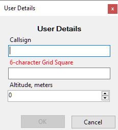
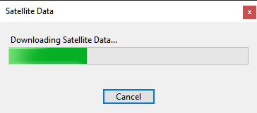
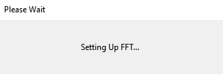

Quick Start
Installation
To install SkyRoof, download the installer from the Download page, run it, and follow the on-screen instructions.
First Run
When you run SkyRoof for the first time, the program performs several important, but somewhat lengthy steps. Fortunately, they need to be done only once.
User Information Input
You will be presented with the User Details dialog:

Enter your callsign, 6-character grid square and your altitude above the sea level. The grid square is required, the program cannot proceed without that information. The other two values are optional.
Satellite Data Download
Then SkyRoof downloads the satellite data: make sure that your computer is connected to the Internet.

Wait until the data are downloaded and imported. Again, SkyRoof cannot proceed without this data downloaded at least once, so if you click on Cancel, the program terminates.
FFT Setup
Wait for SkyRoof to try different ways of computing the FFT transform and to find the one that works best on your system. This may take quite some time!

That's all for the quick start! Now you can use the program for tracking the satellites in frequency and space, and for predicting the satellite passes over your location. To do more than that, you have to perform the rest of the setup steps described in the next sections.